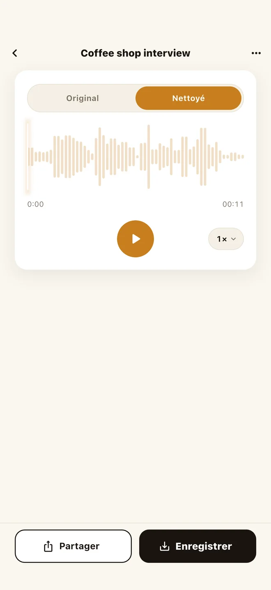

Traitement hors ligne, sans serveur
Après l'installation, le modèle tourne sur l'appareil. Vous pouvez traiter dans le métro, en avion ou là où le signal est faible.
NoisyNo nettoie le bruit de fond des mémos vocaux, réunions enregistrées, interviews, cours et pistes audio de vidéos, directement sur votre téléphone. Ouvrez-la sans compte, traitez même hors ligne, et n'enregistrez ou ne partagez que le résultat.
Fonctionne aussi bien dans le métro, en avion ou partout où il n'y a pas d'internet.
Téléchargement gratuit · Suppression de bruit gratuite · Sans abonnement · Pro est un achat unique
Activez le son pour entendre disparaître le bruit du café.
Beaucoup d'outils de suppression de bruit envoient votre fichier vers un site ou un serveur avant de le traiter. NoisyNo fait l'inverse : le modèle de traitement est embarqué dans l'application. Les enregistrements difficiles à partager — réunions, interviews, mémos personnels — sont ainsi nettoyés sans quitter votre téléphone.
Après l'installation, le modèle tourne sur l'appareil. Vous pouvez traiter dans le métro, en avion ou là où le signal est faible.
Choisissez un fichier et nettoyez-le sans inscription, connexion ni espace de travail. Pas besoin de créer un compte pour nettoyer un enregistrement.
La suppression de bruit est gratuite et il n'y a pas d'abonnement. Avec Pro, un achat unique, vous exportez la vidéo nettoyée, traitez par lots et normalisez le loudness.
L'application se concentre sur les bruits constants : brouhaha de café, climatisation, ventilateur d'ordinateur, bourdonnement de la pièce, vent. Ce n'est pas une application qui ressuscite par magie un enregistrement détruit, mais un outil qui rend plus propre une voix audible mais encombrée.

Prend en charge WAV, MP3, M4A, FLAC, MP4, MOV et M4V. Sur Android, également OGG, Opus, 3GP et 3GPP.
La suppression de bruit s'exécute sur votre téléphone. Pas d'attente d'envoi ni de file de serveur.
Passez d'Original à Cleaned au même endroit, puis enregistrez ou partagez le résultat en M4A (AAC). Avec Pro, enregistrez en WAV sans perte ou directement la vidéo nettoyée.
Conçue pour les réunions sensibles, les mémos personnels que vous préférez ne pas envoyer, et le travail dans des environnements sans internet — toutes les situations où envoyer le fichier n'est pas une option.
Quand le contenu est sensible, traitez sur le téléphone plutôt que de l'envoyer sur un site.
Rendez plus intelligible une voix enregistrée en café, en classe ou en extérieur.
Déposez un MP4 ou un MOV : le son est nettoyé sur l'appareil. Avec Pro, vous récupérez le même clip en vidéo ; sinon, vous gardez l'audio nettoyé.
Les guides en français sont en préparation. En attendant, les guides en anglais présentent le même flux d'utilisation.
Non. Le traitement de NoisyNo s'exécute dans votre téléphone. Les fichiers sélectionnés et les résultats ne sont pas envoyés aux serveurs de GrayForge.
Oui. Une fois l'application installée, le modèle de réduction de bruit tourne sur l'appareil : vous pouvez nettoyer vos enregistrements sans connexion.
Oui. NoisyNo fonctionne sans inscription ni connexion.
Non. La suppression de bruit est gratuite et il n'y a pas d'abonnement. Pro est un achat unique dans l'application qui ajoute l'export de la vidéo nettoyée, le traitement par lots, la normalisation du loudness, l'export WAV sans perte et le découpage avant nettoyage.
En entrée : WAV, MP3, M4A, FLAC, MP4, MOV et M4V, ainsi que OGG, Opus, 3GP et 3GPP sur Android. L'audio nettoyé est enregistré en M4A (AAC) ; Pro ajoute le WAV sans perte (16 bits) et la vidéo nettoyée.
Les fichiers audio ne sont pas envoyés. Toutefois, pour la stabilité de l'application et la compréhension de son usage, des analyses anonymes limitées et des diagnostics de plantage sont utilisés, dans le cadre décrit par la politique de confidentialité.
NoisyNo est disponible sur iPhone, Mac et Android.